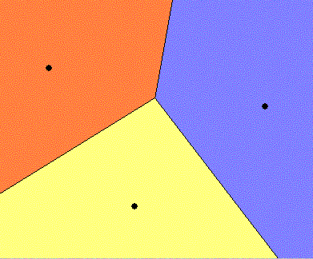

|
|||||||||||||||||
|
Server time: 2006-01-10 05:48:00 |
SPOJ Problem Set73. BacterialProblem code: BAC
In the biology laboratory we are observing several bacterial samples, and under the microscope we have them shaded with different colors to see them expanding their territory on the plate. It is interesting to know that the bacterial are quite 'friendly' that once they meet each other, they do not expand into each other's occupation any more. The bacterial samples are expanding at similar speeds and we take them as the same speed. Since the experiment is tedious and lengthy (Oh My God! there are several thousand samples at our pick), we are going to run a simulation based on this reality, taking the variable that these samples may be planted in different starting spots. We are using rectangular plates and bacterial racing is bounded within the plate. Input formatThere are multiple test cases (about 20000 of them) each taking the following format:
The plate lies in such a coordinating system that the lower-left corner of it is (0,0) and the upper-right corner is (width,height). A test with zero plate area marks the end of the tests and this one shall not be processed. Between each input block there is a blank line.
Output format
Generate a report having the samples sorted on their domination,
with each line taking the following format: The sample occupying more area shall be reported prior to those occupying less. The input data will ensure enough difference in areas to avoid ambiguity. Between each output block there shall be a blank line. ExampleSample input: 10 10 2 5 5 0 0 0 0 Sample output: 01234567890123456789 (Do not output this ruler line) 001 87.50 002 12.50Warning: large Input/Output data, be careful with certain languages
|
||||||||||||||||
| |||||||||||||||||